ジモデン登録の
電気工事店なら
電気スイッチ交換費用
1ヶ所
8,800円(税込)
スイッチ
部品代
Point! プロが解説
電気スイッチ交換費用と 適正業者選びのポイント

電気スイッチ交換でお困りですか？
-
スイッチを押しても
電気がつかない -
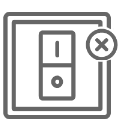 スイッチが破損した
スイッチが押せない -
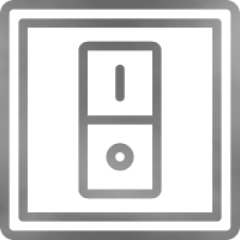 経年劣化による
スイッチの故障
電気スイッチが故障した時に知っておきたい
工事費用の相場や適切な業者の探し方
ぼったくりを防ぐ方法を
電気工事のプロが解説します。
- 一般的な電気スイッチの交換費用は？
- 適切な業者の探し方
- 電気スイッチの交換前の確認事項

電気スイッチ交換（修理）費用と
業者選びで知っておきたいこと
Index
01 電気スイッチ交換とはどんな工事？自分でできる？
-
1 電気スイッチ交換はDIYできる？
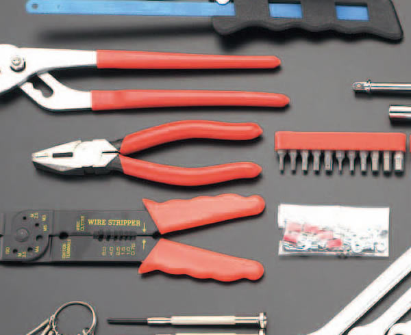 - 電気スイッチ交換は比較的簡単な工事ですが、電気工事士の資格が必要です。 無資格で工事を行った場合、電気工事士法第14条により3万円以下の罰金または3ヵ月以下の懲役が課せられる可能性があります
- 専門知識がない状態で電気工事を行うことは、漏電や感電の危険がありますので、絶対に行わないようにしましょう。
Point！
電気スイッチ交換のDIYは無資格で行ってはいけません。必ず専門業者へ依頼しましょう。
-
2 電気スイッチを新品へ取り替える工事
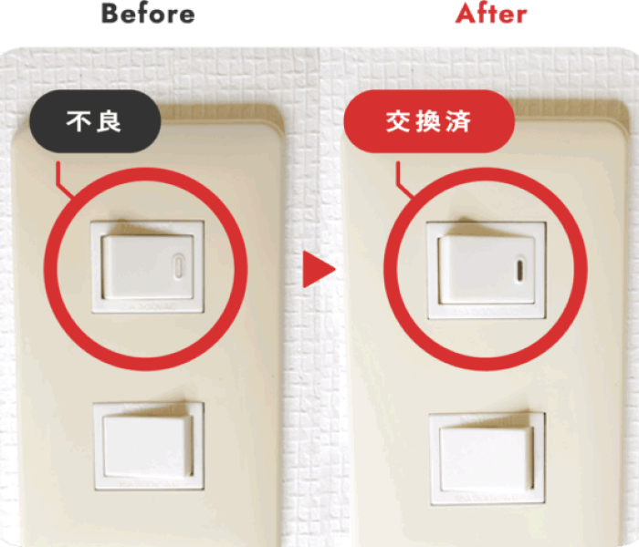 - 照明や換気扇などのスイッチが接触不良や破損で使えなくなった場合、新しいスイッチに取り替える工事です。感電や火災を防ぐため、必ずブレーカーを落として工事を行います。
- 換気扇のタイマースイッチは別ページ【換気扇タイマースイッチの交換費用】を参考にしてください。
-
スイッチが故障した場合は押した時の感覚でわかることが多いです。
本当にスイッチが故障しているのか分からない場合は、スイッチのよくある故障例【スイッチが故障した！自分で直せる？業者へ頼む？】を参考にしてください。 - 電気工事業者へ依頼する場合の見積もりは簡単です。ヒアリングや画像送付でスイッチの仕様を確認できれば、スイッチ交換費用の総額を算出することができます。
Point！
電気スイッチの交換は本当にシンプルな工事です。そのため、費用の目安を教えてくれない・現地を確認しないと値段は出せない・『○○円～です』としか言わない業者は避けた方が良いでしょう。ぼったくり業者や知識の少ない業者の危険があります。
-
3 多くの電気スイッチはパナソニック製
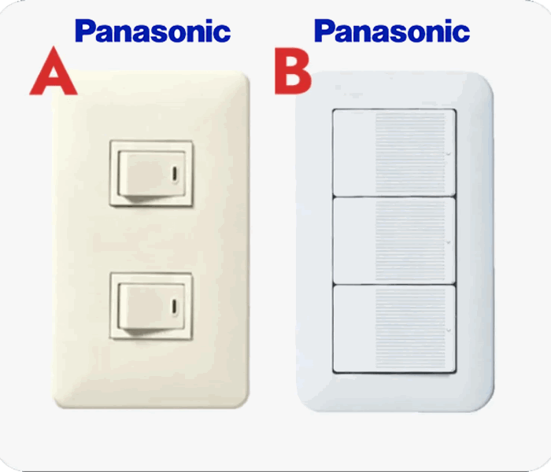 - ほとんどの場合、電気スイッチはパナソニック製です。国内シェアNo.1のため、どの電気工事業者もパナソニック製スイッチの在庫を豊富に抱えています。
- パナソニック製以外の電気スイッチには、東芝製、神保製があります。これらを扱う電気工事業者は少数なため、画像A・B以外のタイプは写真で仕様が判断できない場合があります。
- パナソニック製以外の電気スイッチの場合、部品の調達に時間がかかります。そのため、工事まで数日を要する場合もあることに留意しましょう。
Point！
故障したスイッチを全てパナソニックに交換することは可能です。使用感は変わるかもしれませんが、素早く工事をすることができます。
-
4 古い電気スイッチは一式取り替えが必要
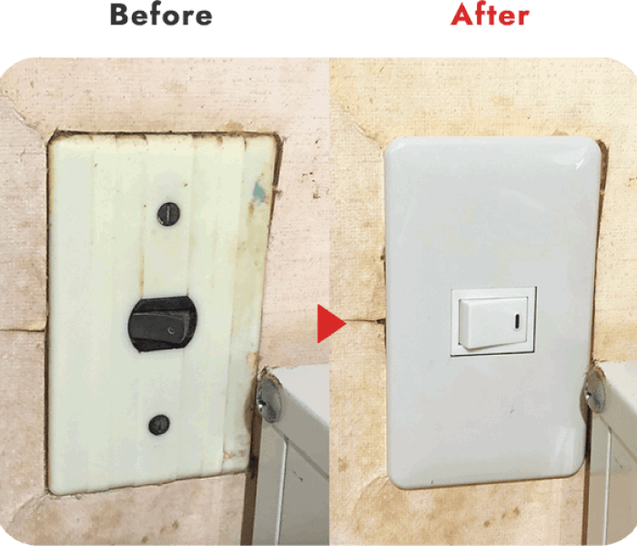 - 写真のようにかなり古い電気スイッチの場合、部品の販売が終了していることがあります。そのためスイッチ単体での交換ができず、プレートなど全ての部品を一式取り替える必要があるケースも少なくありません。
- 一式取り替える必要がある場合でも、一般的なスイッチであれば部品代は安価です。人感センサーやタイマーなど特別なスイッチにしたい場合は、スイッチ部材代として5,500円ほど必要です。
Point！
画像のような一般的なスイッチであれば、丸ごと取り替えたとしても部品代は500円程です。
02 電気工事業者に電気スイッチ交換を依頼する場合の費用相場とスイッチ部品代
一般的なスイッチ交換工事費用総額
の適正価格
１カ所
6,600円~9,900円
(税込)
（工事費の総額。業者により基本料、
出張費などの項目があります。）
スイッチ部品代
（スイッチ部材は300円～1,500円ほど
※タイマーや人感センサー付きを除く）
駐車場代などの
追加費用
（駐車場・コインパーキング代をの負担の有無は業者により異なります。
また、片道20km以上など遠方の場合は交通費がかかる可能性があります）
第一種電気工事士が解説
電気スイッチ交換を業者へ依頼する場合、メールやLINEでの問い合わせに対応している業者に事前に画像を送り、見積もりを出してもらうことがおすすめです。 スイッチの仕様が判断できれば、見積もりのために現地へ行く必要がなく、コストを抑えることができます。
電気スイッチ部材代は300円～1,500円が相場
電気スイッチの部品代は用途により異なりますが、一般的なスイッチは大きく４種類に分類されます。
タイマーや人感センサー機能のない一般的なスイッチの場合、部材代は300円～1,500円程です。
電気スイッチ一覧
-
片切りスイッチ
最も多く使用されており、主に部屋の照明を入り切りするスイッチとなります。
スイッチ部品代は300円程
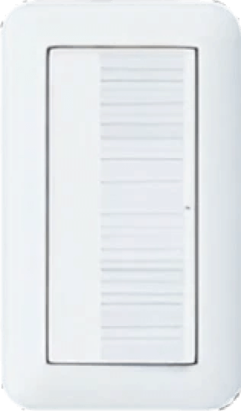 -
ホタルスイッチ
【切】の状態で緑又は黄色に点灯しているスイッチ。暗闇でもスイッチの位置が分かりやすい。
スイッチ部品代は600円程
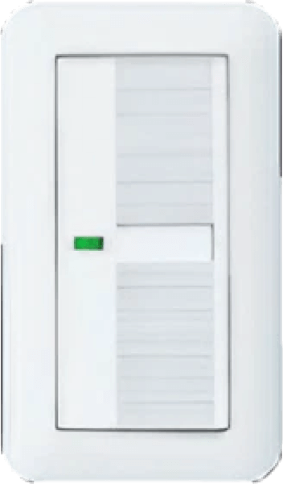 -
パイロットスイッチ
【入】の状態で赤く点灯するスイッチ。換気扇や納戸照明など、動作又は点灯している状態がスイッチを見て判断できます。
スイッチ部品代は~1,500円程
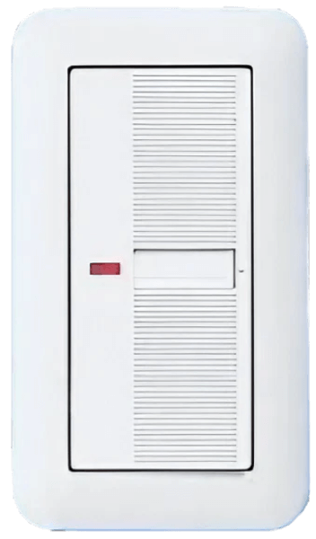 -
３路スイッチ
階段や廊下など、２ヵ所で入り切りするスイッチとなります。
スイッチ部品代は~800円程
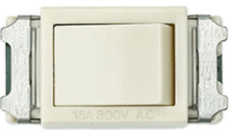
03 電気スイッチ交換の依頼方法・業者の探し方
-
 どこに頼めばいい？
どこに頼めばいい？ -
いくらくらいかかる？
-
 高額請求されない？
高額請求されない？
第一種電気工事士が解説
電気スイッチ交換をしたい場合、どこに依頼すれば良いのでしょうか？照明や換気扇のスイッチが故障した際、修理を依頼するのにおすすめなのは電気工事業者です。依頼先としては電気工事業者・街の電気屋・インターネット集客業者が挙げられますが、どこに依頼をしても最終的に工事を行うのは電気工事業者となります。そのため、最初から電気工事業者に頼むのが最も安価でスピーディーです。
電気工事業者
Expert大規模施設や住宅などの電気工事を行う専門の事業者です。事務所や倉庫で営業をしていることが多いため、探してみると意外と近所にあった、ということがあります。作業の精度はもちろんのこと、スピードも速く、問い合わせから即日工事をしてもらえることも珍しくありません。安心できる業者を選ぶポイントは、事業者名・法人名と住所・電話番号を公開していること、建設業許可または登録電気工事業者の番号を公開していることの2点です。
- 相場
- 交換費用１ヵ所6,600円～9,900円＋スイッチ部品代
- 依頼方法
- 電気工事業者のホームページにはスイッチ交換費用を明確に記載していない場合が多いので、問い合わせページから画像を添付して工事費用を確認する。
街の電気屋
Electrianパナソニックのお店やアトムなどの家電販売と小規模電気工事を行うお店です。街の電気屋はしっかりと料金表があるため、ぼったくりとなるような高額請求の心配はありません。ただし、見積もりのために来てもらうだけで出張費や見積料を請求される可能性があり、コストがかかります。また、電気スイッチ交換費用は相場より高めとなることが多いようです。
- 相場
- 交換費用１ヵ所6,600円～9,900円＋スイッチ部品代
- 依頼方法
- 現地確認（見積り）をしてもらうだけで費用が発生する場合が多いため、不具合のあるスイッチを撮影してお店へ行き確認する。
インターネット集客業者
Internet
くらしのマーケットやミツモアなどの集客業者です。 実際に工事を行うのは、業者と契約している電気工事店となります。クチコミが掲載されていて安心感があるため、知らない業者に依頼をするのが不安という方にはおすすめです。
ただし、インターネット集客業者を通すと電気工事店に手数料が発生するため、電気スイッチ交換費用はその分割高になりやすいです。 また、集客業者の中には「3,000円～」など一見安く見せかけて、実際には高額な費用を請求する悪徳な業者もいるため、注意してください。
- 相場
- 交換費用１ヵ所6,600円～14,000円＋スイッチ部品代
- 依頼方法
- 金額が明確な【くらしのマーケット】又は、【ミツモア】から依頼する。その際、『現地確認後の見積り』としか言わずに目安の金額を教えてくれない業者や、『〇〇円～です』としか言わずに目安を教えてくれない業者は避けた方がよいでしょう。
04 このような場合は電気スイッチの故障ではないかも？
電気がつかない時の原因
-
1 電球、グローランプ、
蛍光灯が切れている -
2 スイッチの故障
-
3 照明器具本体
換気扇や機器の故障 -
4 ブレーカーが落ちている
又はブレーカーの故障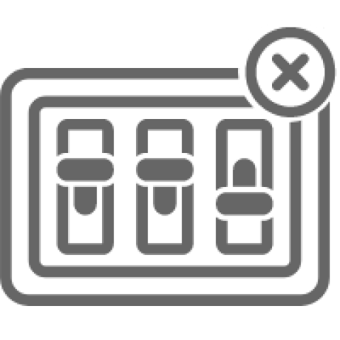 -
5 配線又は電線接続部の異常
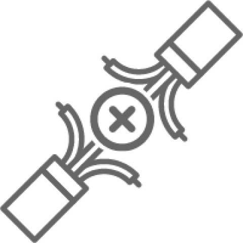
※多くの場合、①～③が原因となります。
電球、蛍光灯、グローランプを
自分で交換する
照明が点灯しない時には、蛍光灯、電球、グローランプの寿命が原因として考えられます。これらの取り替えには工事は不要です。。
ホームセンターなどから蛍光灯、電球、グローランプを購入し、古いものを取り外し、新しいものに付け替えるだけで作業は完了します。
ただし、蛍光灯や電球は近い将来生産終了となるため、LEDシーリングライトやLED電球への交換も視野に入れると良いでしょう。これらは現在ではかなり安価となっています。（蛍光灯や電球からLEDへの交換工事の費用相場は○○円～です。電気工事業者に依頼すれば、半日ほどで工事を行うことができます。）
照明が点灯しない、換気扇などの機器が動かない場合は、念のため分電盤内のブレーカーが全て【入】状態になっていることを確認しましょう。
それでも電気がつかない場合は、スイッチの故障や配線内部の異常が考えられるため、電気工事業者に依頼しましょう。
スイッチの故障の見分け方
このように感じた場合はほぼ間違いなくスイッチの故障となります。
- スイッチを入り切りした時の感触が弱い
- 押した時の音がおかしい
05 電気スイッチ交換を業者へ依頼する場合のまとめ
-
01
電気スイッチ交換費用の
Price
相場１ヵ所の工事費6,600円～9,900円＋スイッチ部材代
- ※工事費とは出張費や基本料など、部品代以外の全てを含んだ値段のことです。
- ※部材代は一般的なスイッチの場合300円～1,500円ほど。
- ※業者により駐車代が必要なことがあります。
- ※スイッチ部材は業者に用意してもらいましょう。スイッチの品番は表面に記載されていない場合が多く、知識のない方がスイッチの仕様を確認するのは感電の危険があります。
-
02
電気工事業者を探す際のポイントと注意すべき点
Price信頼できる電気工事業者
- ・事業者名・法人名と住所・電話番号を公開している電気工事業者であること。
- ・建設業許可または登録電気工事業者の番号を公開していること
- ・問い合わせ時に故障したスイッチの仕様を確認し、必要に応じて写真を送り、あらかじめ総額を算出してくれる業者であること。現地へ行く回数は工事の時の1回のみ。
- ・なるべく地元の電気工事専門業者に依頼することがおすすめです。近所であれば小回りが利き、早く対応できます
- ・スイッチ交換費用を「○○円～」「見ないとわかりません」など、総額の目安すら伝えてくれない業者は後から高額費用を請求してくる危険性があります。知識のある業者であれば、写真を見ただけでどの部材かわかり、見積もりを出すことが可能です。
-
03
電気スイッチ交換工事を頼める業者の探し方
To Whom-
1 地元の電気工事業者
- 地元の電気工事業者を【〇〇市 電気工事業者】などで検索
- 問い合わせページから画像を送り、工事費用を確認
※電気工事業者のホームページは料金の記載がない場合が多いので、問い合わせしづらい可能性があります。
-
2 街の電気屋
- パナソニックのお店などの街の電気屋さん
- 工事費用は少し高めだが、料金表があるので安心
- 現地確認→見積りだけで調査料などが発生するので、故障したスイッチの画像を持ってお店へ行き確認するのが良い。
-
3 インターネット集客業者
- 料金が明確なくらしのマーケット、ミツモアが安心
- 下記を記載している、または回答する業者には要注意！
- 最短〇分で到着
- 最安値
- 3,300円～など相場よりかなり安い金額
-
-
04
電気スイッチ交換工事
How to
の依頼方法メールやLINEでの問い合わせに対応している業者へは、
下記情報があれば正確に工事費用を回答できます。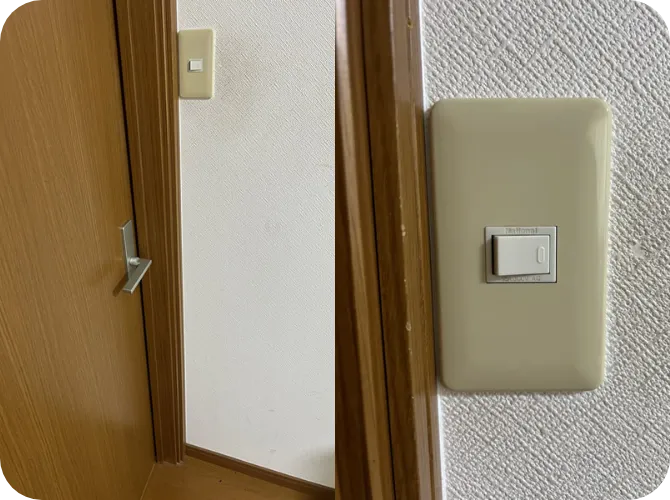 -
・スイッチの画像
(遠くから1枚、近くから1枚) -
・補足事項
①どのスイッチが故障したか
（複数のスイッチがある場合）
②故障したスイッチで何が点灯
又は動くのか
③スイッチ自体が緑、赤点灯する
など
④階段や廊下など２ヵ所以上
で入り切りの有無
-
・スイッチの画像

電気工事施行管理20年の経験
保有資格：第一種電気工事士、１級電気施行管理技士。
電気工事の経験20年、独立後は自力で作成したホームページ集客のみで法人設立後も3年間黒字を維持。